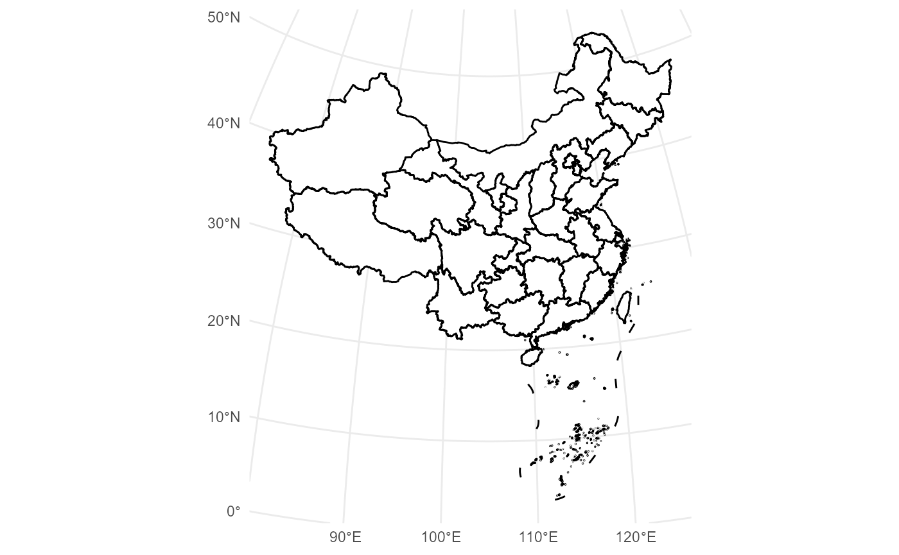

Basic Map Plot
To plot a map of China with province boundaries, use the
geom_mapcn() function. The map uses the Azimuthal Equal
Distance projection by default.
ggplot() +
geom_mapcn() +
theme_minimal()
Example
Here’s a comprehensive example demonstrating how to plot province boundaries, buffer zones, and coastlines on the same map:
ggplot() +
geom_buffer_cn(mainland_dist = 40000) +
geom_buffer_cn(mainland_dist = 20000, fill = "#BBB3D8") +
geom_mapcn(fill = "white") +
geom_boundary_cn() +
theme_bw()